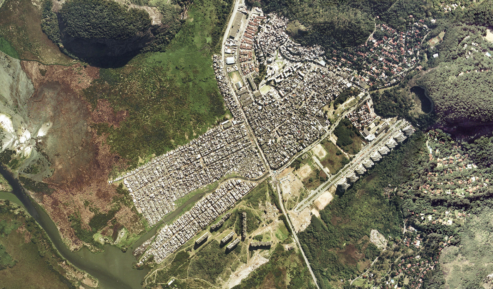

<div class="home">

<center>

<h1>Rio Das Pedras Project</h1>

<a href="https://raw.githubusercontent.com/beh-gis/beh-gis.github.com/master/projects/rdp/img/brasil_gov_rdp_aerial.png" target="_blank"></a>
<p><a href="http://www.ibge.gov.br/" target='_blank'>Source: Instituto Brasileiro de Geografia e Estatística</a></p>


</center>


</div>
<body>

    
<h2>Maps</h2>  
<ul>
	<li>Web Maps</li>
		<ul>
			<li>Sampling Grid</li>
				<ul>
					<li><a href="http://beh-gis.github.io/maps/rdp.html" target="_blank">RdP Sampling Grid Map</a></li>

					<li><a href="http://beh-gis.github.io/maps/rdp_loc.html" target="_blank">RdP Sampling Grid Map - With Device Location Marker</a></li>
				</ul>
			<li>Geotagged Photos</li>
		</ul>
	<li>Print (static) Maps</li>
</ul>
<h2><a href="https://github.com/nygeog/beh_public/tree/master/rio#dg-100" target="_blank">GlobalSat DG-100 information</a></h2>
<h2><a href="http://fulcrumapp.com/" target="_blank">Fulcrum Data Collection App</a></h2>
<ul>
	<li><a href="http://itunes.apple.com/us/app/fulcrum/id467758260?mt=8" target='_blank'>Fulcrum App for iOS</a></li>
	<li><a href="https://play.google.com/store/apps/details?id=com.spatialnetworks.fulcrum" target='_blank'>Fulcrum App for Android</a></li>
</ul>
  
</body>